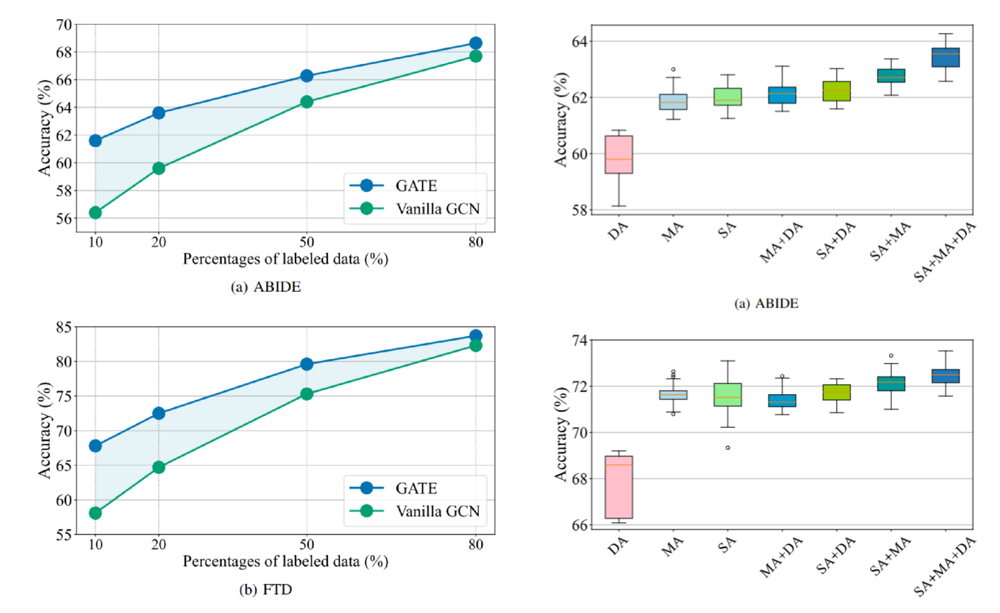
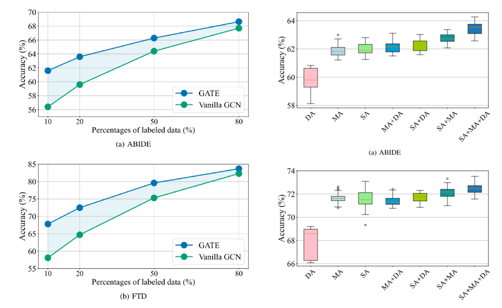

ABSTRACTION
In this work, we focus on the challenging task, neuro-disease classification, using functional magnetic resonance imaging (fMRI). In population graph-based disease analysis, graph convolutional neural networks (GCNs) have achieved remarkable success. However, these achievements are inseparable from abundant labeled data and sensitive to spurious signals. To improve fMRI representation learning and classification under a label-efficient setting, we propose a novel and theory-driven self-supervised learning (SSL) framework on GCNs, namely Graph CCA for Temporal sElf-supervised learning on fMRI analysis (GATE). Concretely, it is demanding to design a suitable and effective SSL strategy to extract formation and robust features for fMRI. To this end, we investigate several new graph augmentation strategies from fMRI dynamic functional connectives (FC) for SSL training. Further, we leverage canonical-correlation analysis (CCA) on different temporal embeddings and present the theoretical implications. Consequently, this yields a novel two-step GCN learning procedure comprised of (i) SSL on an unlabeled fMRI population graph and (ii) fine-tuning on a small labeled fMRI dataset for a classification task. Our method is tested on two independent fMRI datasets, demonstrating superior performance on autism and dementia diagnosis.
INTRODUCTION
Self-Supervised Learning (SSL) for label-efficient data
The suitable SSL strategy for fMRI analysis
• Contrastive-based SSL requires selecting diverse negative samples to form contrastive loss, which is difficult for disease classification using fMRI due to the limited number of samples and a small number of classes.
• Reconstruction-based SSL contains an encoder-decoder structure to reconstruct input, but it is not practical as fitting the low signal-to-noise ratio fMRI features may overfit to spurious features.
• Similarity-based SSL forces the similarity of multiple views of the same data (data and its augmentation) and can provide the best practical value to assist node classification on the graph with unlabeled fMRI data.
The similarity-based SSL strategy brings two challenges on fMRI analysis
• How to design the corresponding consistency loss for SSL training on fMRI analysis? The consistency among correlated signals should be maximized.
METHOD

The proposed method (GATE) can tackle the spurious factors in dynamic FC analysis by developing a GCN-based CCA regularization with the designed multi-view temporal augmentation strategy on BOLD signals. The flowchart of the proposed method (GATE) for SSL-based dynamic FC representation learning: (a) Obtain BOLD signals by data preprocessing with AAL template; (b) Two views $G^{a}$ and $G^{b}$ are randomly generated from the BOLD signals by our augmentation strategy (S-A and M-A); (c) GATE employs the GCN encoder to obtain embeddings of these two views; (d) The consistency of the embeddings is regularized by optimizing CCA-based loss. We also conduct a theoretical discussion to support our motivation and prove the critical implication of how GATE assists learning on label-efficient data. To this end, GATE is an effective and versatile framework to solve the problem of learning on label-efficient datasets, which could bring GCN-based methods from research to clinical applications where labels are difficult to be collected.
EXPERIMENTS
 
